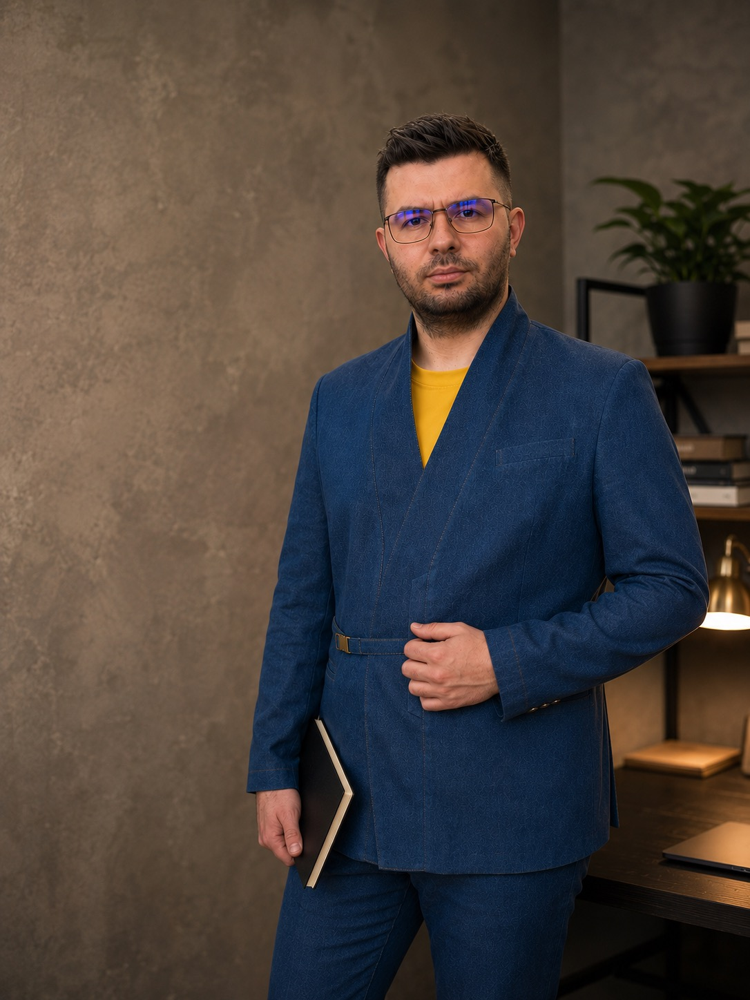
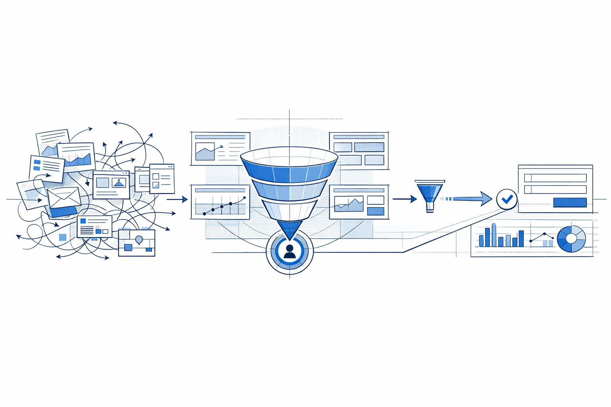
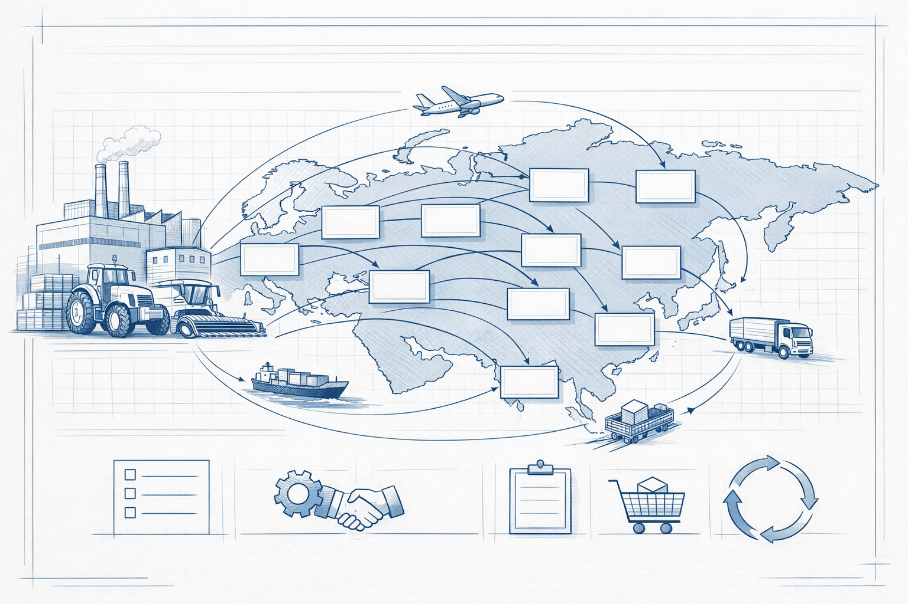
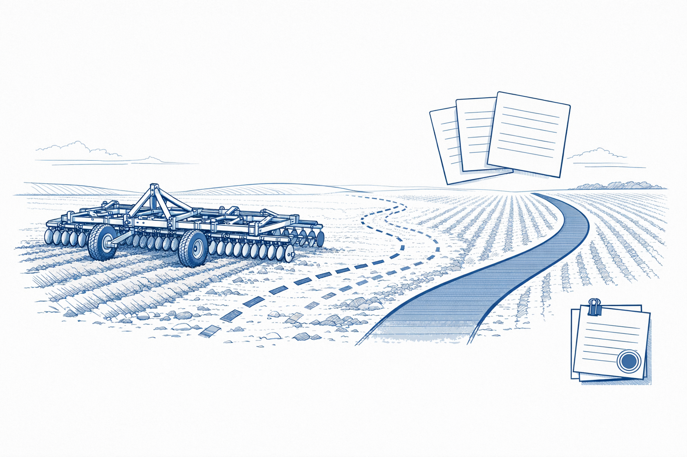
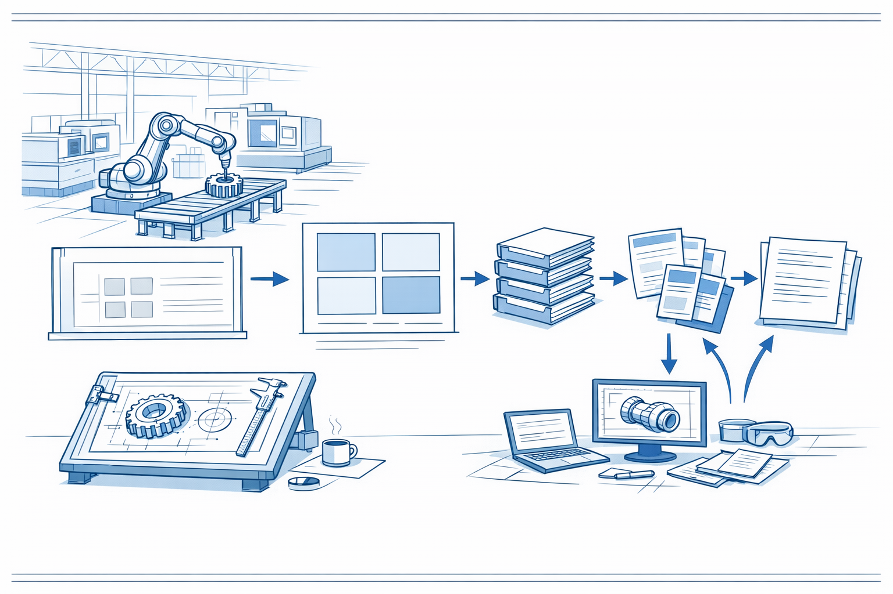
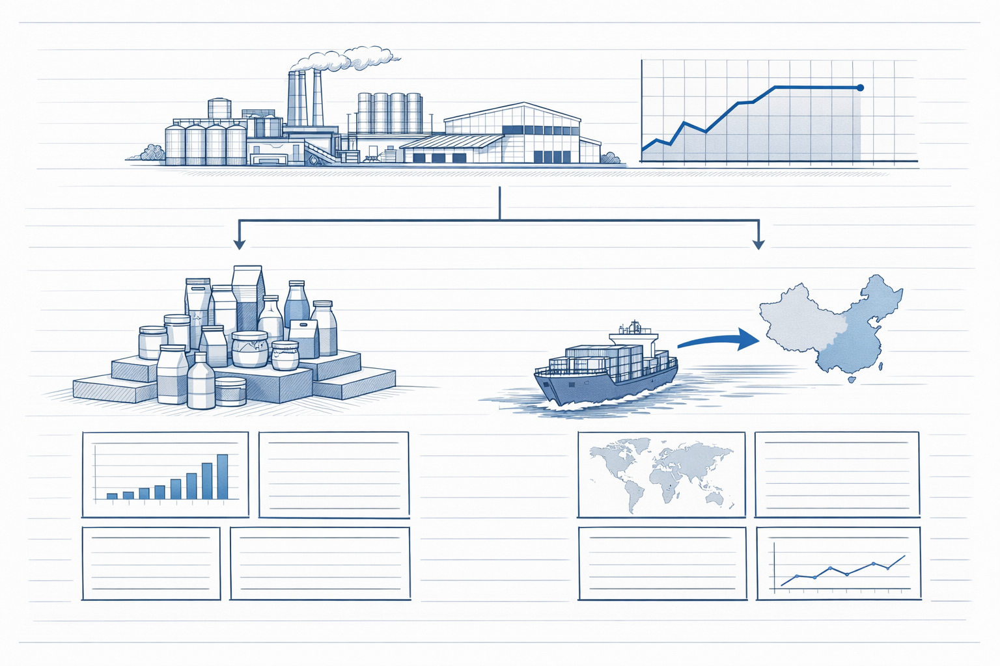
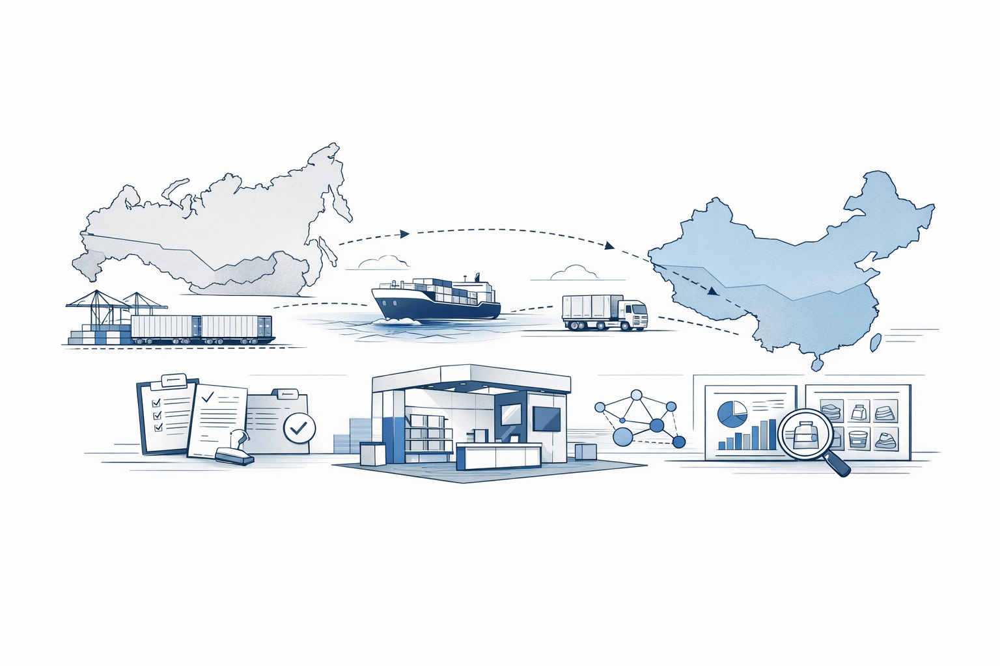
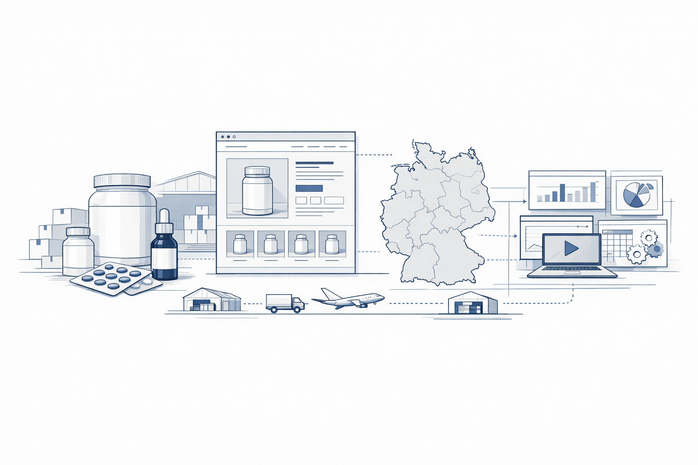
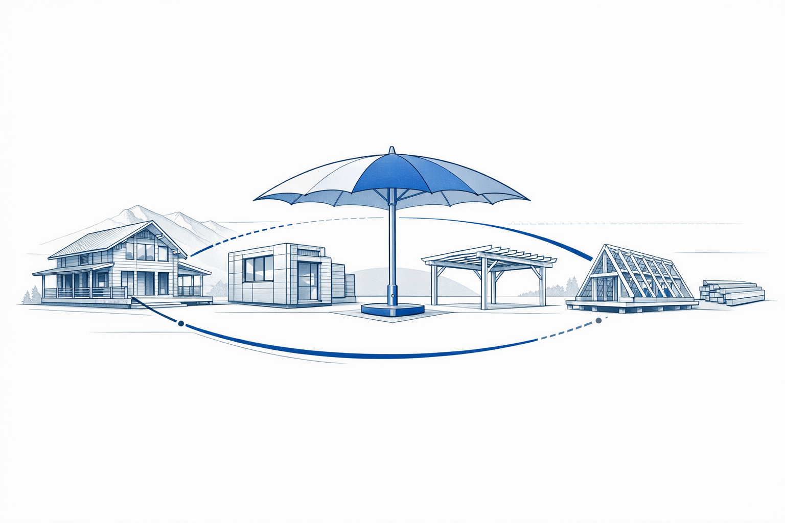
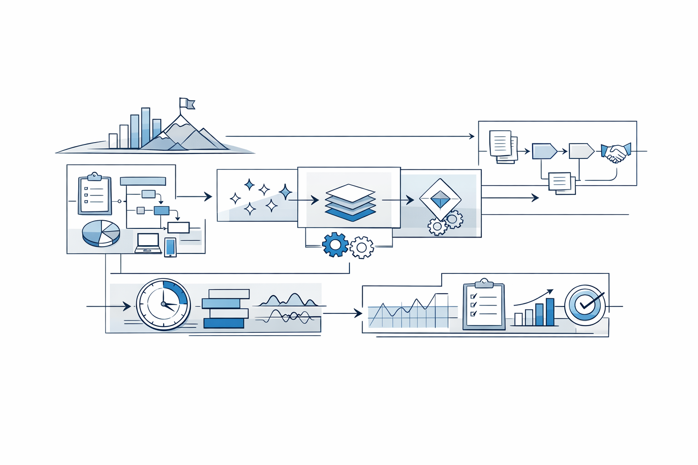

Практика, на которой построен курс
Меня зовут Родион Бокий. Я консультант по маркетинговой стратегии, основатель бренда «Грани Империи». Раньше я руководил экспортным направлением VELES.
В маркетинге я с 2013 года. Сначала запустил собственный образовательный центр, потом работал с экспортом, промышленностью, B2B, пищевыми продуктами, потребительскими брендами и сложными продажами. Еще я регулярно преподаю на президентской программе переподготовки управленческих кадров.

Почему маркетинг вроде бы есть, а управлять им трудно
Маркетинг становится управляемым, когда команда видит не набор действий, а систему причин и решений.
- Проблема. Реклама запускается, сайт есть, подрядчики работают, но решения все равно принимаются интуитивно.
- Разбор. Я раскладываю систему на клиента, ценность продукта, сомнения, путь к заявке, работу сайта и продавца.
- Результат. Команда получает конкретные решения: что менять, что объяснять, какие гипотезы проверять и что измерять.
Подробнее о подходе к системе маркетинга
Моя работа обычно начинается с вопроса: почему маркетинг вроде бы есть, а управлять им трудно? Реклама запускается, сайт есть, подрядчики что-то делают, бюджеты сливаются, но все равно нет понятной системы: действия хаотичные, решения принимаются интуитивно, а не на основе данных.
Я помогаю разложить это на части: кто клиент, в чем клиент видит ценность продукта, где он сомневается, почему не оставляет заявку, что должен объяснять сайт, что должен делать продавец и какие действия правда стоит измерять.
Мне важно, чтобы результатом моей работы стали конкретные решения, основанные на объективных исследованиях и фактах: что менять в продукте, как объяснять ценность, какие материалы нужны продажам, какие гипотезы проверять и что команда должна делать завтра.
Экспортные рынки и полный коммерческий процесс
Экспорт оказался не рекламной задачей, а полным коммерческим процессом от выбора рынка до сервиса.
- Зона ответственности. Территория вне России и Казахстана: рынок, конкуренты, позиционирование, продажи и дилеры.
- Что собирали. Маркетинг, дилерскую сеть, постпродажное обслуживание и логистику как одну связанную систему.
- Итог. За время работы бренд вышел на 12 экспортных рынков.
Подробнее о подходе к коммерческому процессу
Эта логика проходила через разные проекты: экспорт, промышленность, пищевые продукты, потребительские бренды и B2B-продажи.
В VELES я отвечал за работу компании на внешних рынках. В моей зоне ответственности была территория вне России и Казахстана. Я отвечал за весь процесс: от выбора внешнего рынка, анализа рынка и конкурентов, разработки позиционирования до маркетинга, продаж, выстраивания дилерской сети, постпродажного обслуживания и логистики. За время этой работы мы вывели бренд на 12 экспортных рынков.


VELES и рынок Германии
Один разговор с клиентом изменил всю логику продажи.
- Что не работало. Мы продавали немецким фермерам так же, как российским: выставки, холодные звонки, привычные аргументы.
- Что выяснили. JTBD-интервью показало: немецкие фермеры покупают борону под другие задачи и оценивают ее по другим критериям.
- Что изменили. Пересобрали аргументацию и рекламу под реальную задачу клиента.
Подробнее о кейсе
Один из важных кейсов связан с выходом пружинной бороны VELES на рынок Германии.
Сначала мы пытались продавать ее немецким фермерам так же, как в России. Логика казалась разумной: технология выращивания похожая, машина та же, значит и задачи примерно те же. Но это не сработало. Мы тратили деньги на выставки, холодные звонки и привычные каналы продаж, а результата не получали.
Перелом случился после глубинного интервью по Jobs To Be Done. Оказалось, что немецкие фермеры используют борону иначе. Они покупают ее под другие задачи и оценивают по другим критериям.
Когда мы перестроили аргументацию под эти задачи, стало видно, что у VELES сильное предложение по цене, качеству и технологическим параметрам.
Я пересобрал наш маркетинг под эти задачи и запустил рекламу. И мы сразу получили результат: бюджет около 30 000 рублей за месяц дал продажи примерно на 300 000 евро. После этого пошли рекомендации и входящие обращения.
Если вам важно понять не только мой опыт, но и сам формат практикума, можно открыть основную страницу курса.
Промышленный проект
Задача была не “сделать рекламу”, а пересобрать маркетинг промышленной группы как систему роста.
- Что делали. Стратегия, команда, анализ продуктового портфеля, материалы для продаж и новое позиционирование.
- Что получила продажа. Заявки с потенциальным объемом 645 млн рублей. Это не выручка, а объем возможных сделок, переданных в работу.
- Что запустили дальше. R&D-команду и новый продукт под рынок с оценочным объемом 11 млрд рублей в год.
Подробнее о кейсе
В одном промышленном проекте я руководил пересборкой маркетинга группы компаний в сфере техники и оборудования. Название компании не могу раскрыть из-за требований NDA, но могу кратко рассказать о задаче и результате.
Я руководил маркетинговой стратегией, формированием команды, анализом продуктового портфеля, подготовкой материалов для продаж и разработкой нового позиционирования группы компаний.
Результат: маркетинг передал в отдел продаж заявки с потенциальным объемом 645 млн рублей. Это не выручка, а объем заявок и возможных сделок, переданных в продажи.
Еще в этом проекте мы собрали R&D-команду и запустили разработку нового продукта под рынок с оценочным объемом 11 млрд рублей в год.


Пищевое производство: потолок роста
Когда рынок кажется освоенным, рост часто находится не в рекламе, а в выборе новой стратегической траектории.
- Ситуация. Крупные покупатели уже были клиентами компании, а бизнес хотел расти дальше.
- Первый вариант. Идти в соседние ниши на том же рынке.
- Вывод анализа. С тем же продуктом можно выходить на экспорт; приоритетным рынком стал Китай.
Подробнее о кейсе
В проекте для пищевого производства из крупного регионального холдинга я руководил маркетингом. Стояла задача провести стратегический анализ положения предприятия на рынке и найти новые источники роста.
Компания столкнулась с «потолком роста»: ее уже хорошо знали на рынке. Все крупные покупатели уже были клиентами компании. При этом у бизнеса были ресурсы и желание расти дальше.
На поверхности лежал рост «вбок»: идти в соседние ниши на том же рынке. Моя задача состояла в том, чтобы выбрать соседнюю нишу для развития компании. Но анализ показал другой путь: с тем же продуктом можно выходить на экспорт. Приоритетным рынком мы выбрали Китай.
Пищевое производство и Китай
Выход на Китай требовал не “перевести сайт”, а собрать маршрут входа на рынок.
- Маршрут. Стратегия выхода, логистика и разрешительные документы для работы на рынке Китая.
- Первые контакты. Участие в крупнейшей отраслевой выставке Юго-Восточной Азии и первые партнеры.
- Параллельная работа. Ассортимент, новые продукты, исследования потребителей и конкурентов.
Подробнее о кейсе
Я разработал стратегию выхода на китайский рынок, проработал логистику, организовал участие в крупнейшей отраслевой выставке Юго-Восточной Азии, где появились первые партнеры, и получил все разрешительные документы для работы на рынке Китая.
Параллельно мы работали с ассортиментом, новыми продуктами, исследованиями потребителей и конкурентов.


Terraful GmbH
Бренд для Германии собирался из России: продукт, сайт, логистика и команда должны были работать как единая модель.
- Задача. Создать с нуля собственную торговую марку БАДов для рынка Германии.
- Что собрали. Продуктовую линейку, бренд, стратегию выхода, логистические маршруты и сайт на немецком языке.
- Команда. Удаленный отдел маркетинга находился в Алтайском крае, но работал на немецкий рынок.
Подробнее о кейсе
Нужно было «с нуля» создать бренд собственной торговой марки для продажи БАДов российского производства на рынке Германии.
Мы разработали продуктовую линейку, бренд, стратегию выхода, логистические маршруты и сайт на немецком языке.
Еще мы создали удаленный отдел маркетинга. Команда находилась в Алтайском крае, но работала на немецкий рынок. Я руководил этим отделом.
Для проекта это было важным преимуществом. Держать маркетинговую команду в Германии было бы намного дороже. Удаленная модель позволяла работать с немецким рынком и держать расходы ниже. Проект был собран как рабочая модель, пошли первые продажи, но проект остановился после начала СВО.
Алтайские Мастера
Разные компании группы оказались частями одной большой работы клиента.
- Вопрос. Продвигать каждую компанию отдельно или объединить их под зонтичным брендом.
- Что показал JTBD. Бизнесы разные, но закрывают одну большую задачу клиента разными способами.
- Решение. Зонтичный бренд дал конкурентное преимущество там, где рынок был раздроблен.
Подробнее о кейсе
В «Алтайских Мастерах» нужно было ответить на стратегический вопрос: объединять несколько компаний группы под один зонтичный бренд или продвигать каждую отдельно.
В группу входили разные юридические лица, специализирующиеся на строительстве из дерева и производстве деревянных конструкций. На первый взгляд это были разные бизнесы. Но исследование по Jobs To Be Done показало, что они закрывают одну большую работу клиента, просто разными способами.
Потом мы посмотрели на конкурентов. На рынке почти не было игрока, который закрывал бы эту работу целиком. Если продвигать каждую компанию отдельно, они оставались бы похожими на остальных. Зонтичный бренд позволил сформировать конкурентное преимущество и выделиться на рынке.
На этой основе я разработал стратегию развития добавочной ценности бренда, фактическую карту пути клиента и долгосрочную стратегию маркетинга. Позже в этой логике провели ребрендинг. Компания использует стратегический документ в работе.


Почему это стало основой курса
Все кейсы разные, но рабочая логика в них одна.
- Сначала. Понять рынок и реальную задачу клиента.
- Потом. Собрать продуктовую ценность, путь к сделке и материалы для продаж.
- В итоге. Связать команду и метрики так, чтобы маркетинг стал измеримым и управляемым.
На этой практике и построен курс «Живой маркетинг».
Подробнее о логике курса
Все эти проекты разные, но логика в них одна: сначала нужно понять рынок и задачу клиента, потом собрать продуктовую ценность, путь к сделке, материалы для продаж, команду и систему метрик, чтобы процесс стал измеримым и управляемым.
На этой практике и построен курс «Живой маркетинг».
Начнем с вашего проекта
Оставьте заявку на встречу-знакомство. Расскажете о своей ситуации и задаче, а мы вместе посмотрим, какого прогресса вы хотите достичь и подходит ли вам формат группы.